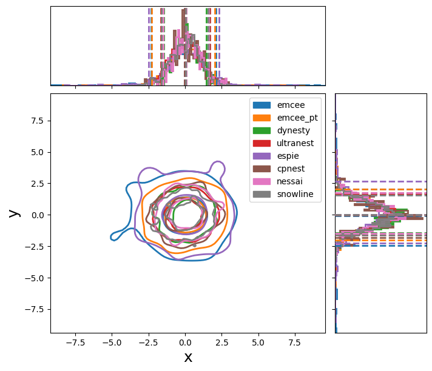

Trying out different samplers
This page shows basic configurations for some of the samplers that PyCBC Inference supports. Note that these samplers often have many additional options which you can learn apart from their respective library documentation pages. There very likely are more optimal settings than the example ones here for your problem as these are configured to run quickly.
We’ll use a very simple analytic model to test each sampler. The following is the configuration to set up a unimodal gaussian likelihood. We’ll have each sampler try to fit this.
[model]
name = test_normal
[variable_params]
x =
y =
[prior-x]
name = uniform
min-x = -10
max-x = 10
[prior-y]
name = uniform
min-y = -10
max-y = 10
Each sampler needs nees a slightly different configuration. Below are basic configurations which can analyze this simple problem.
Emcee
[sampler]
name = emcee
nwalkers = 100
niterations = 200
;##### Other possible options
;effective-nsamples = 1000
;max-samples-per-chain = 1000
;checkpoint-interval = 2000
;[sampler-burn_in]
;burn-in-test = nacl & max_posterior
Parallel-tempered Emcee
[sampler]
name = emcee_pt
nwalkers = 100
ntemps = 4
niterations = 100
;##### Other possible options
;effective-nsamples = 1000
;max-samples-per-chain = 1000
;checkpoint-interval = 2000
;[sampler-burn_in]
;burn-in-test = nacl & max_posterior
PTEmcee
[sampler]
name = ptemcee
nwalkers = 100
ntemps = 4
niterations = 100
;##### Other possible options
;effective-nsamples = 1000
;max-samples-per-chain = 1000
;checkpoint-interval = 2000
;adaptive =
;adaptation-lag = 10000
;adaptation-time = 100
;[sampler-burn_in]
;burn-in-test = nacl & max_posterior
Dynesty
[sampler]
name = dynesty
dlogz = 0.1
nlive = 150
; Other arguments (see Dynesty package for details).
; bound, bootstrap, enlarge, update_interval, sample
; loglikelihood-function = loglr
Ultranest
[sampler]
name = ultranest
dlogz = 0.1
;##### Other possible options (see ultranest package for useage)
; update_interval_iter_fraction, update_interval_ncall
; log_interval, show_status, dKL, frac_remain,
; Lepsilon, min_ess, max_iters, max_ncalls,
; max_num_improvement_loops, min_num_live_points,
; cluster_num_live_points
Epsie
[sampler]
name = epsie
nchains = 100
niterations = 100
ntemps = 4
;##### Other possible options
;effective-nsamples = 1000
;max-samples-per-chain = 1000
;checkpoint-interval = 2000
;[sampler-burn_in]
;burn-in-test = nacl & max_posterior
[jump_proposal-x]
name = normal
[jump_proposal-y]
name = normal
The following are also supported, but require either python3 support only (cpnest) or an external package (multinest).
cpnest
[sampler]
name = cpnest
nlive = 100
maxmcmc = 1000
nthreads = 1
verbose = 1
;##### Other possible options
;verbose = True
;loglikelihood-function =
Multinest
[sampler]
name = multinest
nlivepoints = 100
;##### Optional arguments
;evidence-tolerance = 0.1
;sampling-efficiency = 0.3
;checkpoint-interval = 5000
;importance-nested-sampling = True
Snowline
[sampler]
name = snowline
num_gauss_samples = 500
min_ess = 500
max_improvement_loops = 3
nessai
[sampler]
name = nessai
nlive = 200
If we run these samplers, we create the following plot:
{kind=link}